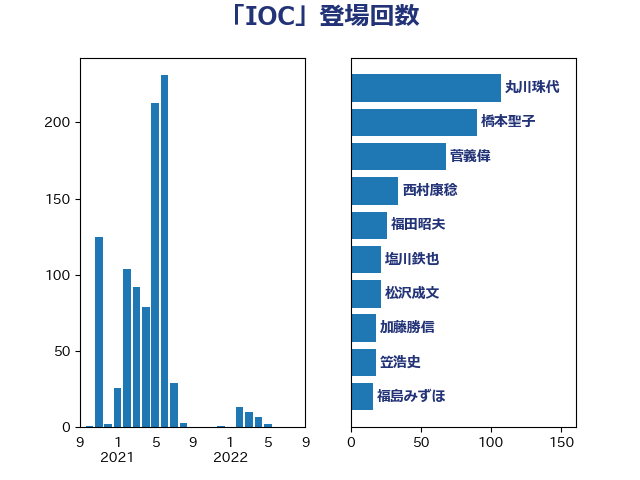

単語「IOC」

| 丸川珠代 | 自由民主党 | 107 回 |
| 橋本聖子 | 無所属 | 90 回 |
| 菅義偉 | 自由民主党 | 68 回 |
| 西村康稔 | 自由民主党 | 34 回 |
| 福田昭夫 | 立憲民主党 | 26 回 |
| 塩川鉄也 | 日本共産党 | 22 回 |
| 松沢成文 | 日本維新の会 | 22 回 |
| 加藤勝信 | 自由民主党 | 18 回 |
| 笠浩史 | 無所属 | 18 回 |
| 福島みずほ | 社会民主党 | 16 回 |
| 田島麻衣子 | 立憲民主党 | 14 回 |
| 長妻昭 | 立憲民主党 | 12 回 |
| 渡辺周 | 立憲民主党 | 11 回 |
| 石井章 | 日本維新の会 | 11 回 |
| 斎藤嘉隆 | 立憲民主党 | 10 回 |
| 西村智奈美 | 立憲民主党 | 9 回 |
| 三谷英弘 | 自由民主党 | 8 回 |
| 丹羽秀樹 | 自由民主党 | 8 回 |
| 山添拓 | 日本共産党 | 8 回 |
| 枝野幸男 | 立憲民主党 | 8 回 |
| 蓮舫 | 立憲民主党 | 8 回 |
| 杉尾秀哉 | 立憲民主党 | 6 回 |
| 牧義夫 | 立憲民主党 | 6 回 |
| 石川大我 | 立憲民主党 | 6 回 |
| 森山浩行 | 立憲民主党 | 5 回 |
| 福山哲郎 | 立憲民主党 | 5 回 |
| 萩生田光一 | 自由民主党 | 5 回 |
| 伊藤孝恵 | 国民民主党 | 4 回 |
| 吉良よし子 | 日本共産党 | 4 回 |
| 宮本徹 | 日本共産党 | 4 回 |
| 打越さく良 | 立憲民主党 | 4 回 |
| 玉木雄一郎 | 国民民主党 | 4 回 |
| 田嶋要 | 立憲民主党 | 4 回 |
| 藤田文武 | 日本維新の会 | 4 回 |
| 辻元清美 | 立憲民主党 | 4 回 |
| 倉林明子 | 日本共産党 | 3 回 |
| 古屋範子 | 公明党 | 3 回 |
| 吉川元 | 立憲民主党 | 3 回 |
| 堀内詔子 | 自由民主党 | 3 回 |
| 柳ヶ瀬裕文 | 日本維新の会 | 3 回 |
| 田村憲久 | 自由民主党 | 3 回 |
| 石橋通宏 | 立憲民主党 | 3 回 |
| 谷田川元 | 立憲民主党 | 3 回 |
| 高橋はるみ | 自由民主党 | 3 回 |
| 中谷一馬 | 立憲民主党 | 2 回 |
| 勝部賢志 | 立憲民主党 | 2 回 |
| 小池晃 | 日本共産党 | 2 回 |
| 平木大作 | 公明党 | 2 回 |
| 柚木道義 | 立憲民主党 | 2 回 |
| 水岡俊一 | 立憲民主党 | 2 回 |
| 池田佳隆 | 自由民主党 | 2 回 |
| 浅野哲 | 国民民主党 | 2 回 |
| 石川香織 | 立憲民主党 | 2 回 |
| 舩後靖彦 | れいわ新選組 | 2 回 |
| 吉川ゆうみ | 自由民主党 | 1 回 |
| 吉田忠智 | 立憲民主党 | 1 回 |
| 大西健介 | 立憲民主党 | 1 回 |
| 寺田学 | 立憲民主党 | 1 回 |
| 山井和則 | 立憲民主党 | 1 回 |
| 山谷えり子 | 自由民主党 | 1 回 |
| 川田龍平 | 立憲民主党 | 1 回 |
| 志位和夫 | 日本共産党 | 1 回 |
| 梅村聡 | 日本維新の会 | 1 回 |
| 河野太郎 | 自由民主党 | 1 回 |
| 浮島智子 | 公明党 | 1 回 |
| 玄葉光一郎 | 立憲民主党 | 1 回 |
| 田村智子 | 日本共産党 | 1 回 |
| 石垣のりこ | 立憲民主党 | 1 回 |
| 石川昭政 | 自由民主党 | 1 回 |
| 菊田真紀子 | 立憲民主党 | 1 回 |
| 赤羽一嘉 | 公明党 | 1 回 |
| 音喜多駿 | 日本維新の会 | 1 回 |
| 高橋千鶴子 | 日本共産党 | 1 回 |